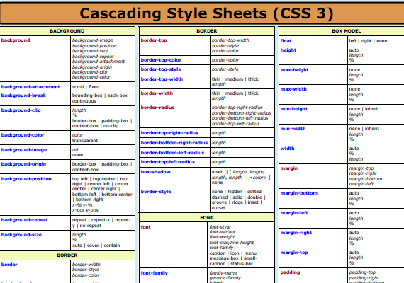

Les feuilles de styles (en anglais "Cascading Style Sheets", abrégé CSS) sont un langage qui permet de gérer la présentation d'une page Web.
Le langage CSS est une recommandation du World Wide Web Consortium (W3C), au même titre que HTML ou XML.
Les styles permettent de définir des règles appliquées à un ou plusieurs documents HTML.
Ces règles portent sur le positionnement des éléments, l'alignement, les polices de caractères, les couleurs, les marges et espacements, les bordures, les images de fond, etc.
Le but de CSS est séparer la structure d'un document HTML et sa présentation.
En effet, avec HTML, on peut définir à la fois la structure (le contenu et la hiérarchie entre les différentes parties d'un document) et la présentation. Mais cela pose quelques problèmes.
Avec le couple HTML/CSS, on peut créer des pages web où la structure du document se trouve dans le fichier HTML tandis que la présentation se situe dans un fichier CSS.
De plus, CSS ajoute des fonctionnalités nouvelles par rapport à HTML au point de vue du style.
En effet, HTML permet une gestion assez sommaire du style des documents.
1.les propriétées de mise en forme de texte.
C'est tout ce qui touche à la présentation du texte proprement dit : le gras, l'italique, le souligné, la police, l'alignement, etc.
2.Propriétés de couleur et de fond.
C'est tout ce qui concerne l'embellisement par la couleur:fond de page,tableaux, ligne, encart etc...
3.les propriétées boite.
c'est tout ce qui concerne les encarts dit " BOITES ".
4.Propriétés de positionnement et d'affichage
c'est tout ce qui concerne la mise en page des textes,images etc...
5.les propriétées des tableaux.
c'est tout ce qui touche la mise en forme des tableaux: le style et le format.
